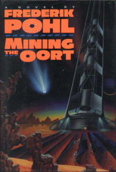

Mining the Oortby Frederik Pohl
publisher: Del Rey
Fiction, 264 pages | 
(book cover art, Copyright ©1992 Frederik Pohl)
Used with Permission. |
Return to the Book MenuPrevious|Next
Description:
Humanity is trying to terraform Mars, and while Earth finances
the project, those humans living on Mars live under a tremendous debt.
This is the story of a young man from Mars pursuing his dreams to become
a member of the team that mines comets from the Oort cloud to send to Mars.
Recommended for: fiction lovers, future engineers, space
enthusiasts, future doctors, and political science majors.
Did-you-read questions:
Deadline: February 1, 2005.
These should be easy questions, but you should have the questions ready and keep an eye out during your reading. Each question should be answered with 1-2 sentences.
Note: these questions are not probably not the most important part of the book! Your essay will not have to cover these questions!
- What are the two names of the classes that Martians and Earthies must take
to get along with other people well?
- Where did Dekker get Brave Bear?
- What is in the video that Ven Kupferfeld shows Dekker?
- What did Annetta lose when she had her accident?
- What happens on the Co-Mars Two station during the second flare alert?
Report Questions:Deadline: Peer Review Session on February 8, 2005; paper due February 10, 2005.
You should write a 3 - 4 page essay on one of the following questions. Your essay should include examples and references to the book, unless otherwise specified. Page number references are sufficient for citing material from the primary book. If you use outside materials, cite your sources in full. If you would rather write on a different topic, you may, but clear it with Mr. Howe or Ms. Sullivan first.
- The idea of humanity trying to peacefully coexist is a recurring theme
of this book. Peace is certainly a noble calling-- what do you think of
the kind of peace depicted in this book? Is it effective? Is it pleasant?
Should humanity strive towards or away from this political future?
- In what ways does Dekker DeWoe grow up in this story? In what ways does
he still need to grow up?
- Do you think that this story is a plausible one? Did the author do a good
job of making you believe in the science and characters in this book? Give
examples of what did or did not work for you.
- What do you think are Dekker's greatest strengths? His greatest weaknesses?
How much of these strengths and weaknesses are a reflection of his being
Martian, and how much are they simply part of being human?
Graphic and Presentation:
Deadline: February 21 - March 3, 2005.You will give a 10 minute presentation on both of the following:
- Convince your peers that they should (or should not) read this book. (This may include a brief summary of the book.) Give examples of what was cool or worthwhile in the book, and what you got out of it (or didn't).
- Describe a (realistic) science idea that you learned about in this book, citing information from at least 2 external sources (other than the dictionary). If you would like help choosing or understanding an idea from your book, you are invited to come talk to Mr. Howe or Ms. Sullivan.
Note: This presentation should not be just a reading of your paper!Along with this presentation, you should have a graphic that will go with it. A Power Point presentation is recommended, but if you have a special idea for a something else, such as a model, an original video presentation, or a well done drawing/ painting/ sculpture/ etc., you may do so, provided it involves a similar level of effort and polish. Speak to Mr. Howe or Ms. Sullivan first if you are considering an alternate graphic format to the Power Point.
Return to the Book MenuPrevious|Next